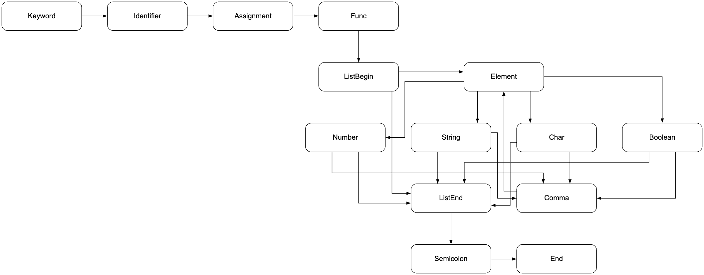

Грамматика G[Z] является контекстно-свободной, поэтому анализ реализован методом рекурсивного спуска.
Метод представляет собой алгоритм нисходящего синтаксического анализа, реализуемый путём взаимного вызова процедур (методов). В архитектуре приложения каждая такая процедура соответствует одному из этапов разбора конструкции объявления списка с инициализацией, описанной в разделе 2. Применение правил происходит последовательно: парсер обрабатывает лексемы, полученные от лексического анализатора, двигаясь по входной строке слева направо.
Реализованный анализатор относится к классу предсказывающих парсеров. Это связано с тем, что выбор дальнейшего шага разбора выполняется по текущей лексеме входного потока. В данном случае по очередной лексеме парсер может определить, какой этап анализа должен быть выполнен далее: проверка начала объявления, разбор содержимого списка, обработка разделителя элементов или завершение конструкции.
В процессе анализа последовательно проверяются ключевое слово val, идентификатор, оператор присваивания, вызов функции listOf, открывающая круглая скобка, элементы списка, закрывающая круглая скобка и символ ;. Если все элементы конструкции расположены корректно, строка считается синтаксически правильной.
